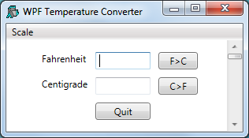
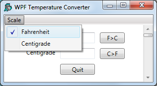

The functions and data for this example are provided in the workspace WPFINtro.dws in the namespace WPF.UsingXAML. To run the example:
)LOAD WPFINtro
WPF.UsingXAML.TempConverter
Arguably the easiest way to create a WPF GUI is to define it using XAML. The XAML defines the structure, layout and appearance of the user-interface in a very concise manner. It is still necessary to write code to display the XAML and to respond to user actions, but the amount of code involved is minimal.
The XAML for the Temperature Converter is shown below.
<Window
xmlns="http://schemas.microsoft.com/winfx/2006/xaml/presentation"
xmlns:x="http://schemas.microsoft.com/winfx/2006/xaml"
Name="Temp"
Title="WPF Temperature Converter"
SizeToContent="WidthandHeight">
<DockPanel LastChildFill="False">
<Menu DockPanel.Dock="Top">
<MenuItem Header="_Scale">
<MenuItem Name="mnuFahrenheit" Header="_Fahrenheit"
IsCheckable="True" IsChecked="True"/>
<MenuItem Name="mnuCentigrade" Header="_Centigrade"
IsCheckable="True"/>
</MenuItem>
</Menu>
<Grid Width="230" Margin="40,10,10,10">
<Grid.RowDefinitions>
<RowDefinition Height="Auto"/>
<RowDefinition Height="Auto"/>
<RowDefinition Height="Auto"/>
</Grid.RowDefinitions>
<Grid.ColumnDefinitions>
<ColumnDefinition Width="Auto"/>
<ColumnDefinition Width="80"/>
<ColumnDefinition Width="60"/>
</Grid.ColumnDefinitions>
<Label Grid.Row="0" Grid.Column="0" Content="Fahrenheit"/>
<Label Grid.Row="1" Grid.Column="0" Content="Centigrade"/>
<TextBox Name="txtFahrenheit" Grid.Row="0" Grid.Column="1"
Margin="5"/>
<TextBox Name="txtCentigrade" Grid.Row="1" Grid.Column="1"
Margin="5"/>
<Button Name="btnF2C" Grid.Row="0" Grid.Column="2"
Content="F>C" Margin="5"/>
<Button Name="btnC2F" Grid.Row="1" Grid.Column="2"
Content="C>F" Margin="5"/>
<Button Name="btnQuit" Grid.Row="2" Grid.Column="1"
Content="Quit" Margin="5"/>
</Grid>
<ScrollBar Name="scrTemp" DockPanel.Dock="Right" Width="20"
Orientation="Vertical" Minimum="1" Maximum="213">
</ScrollBar>
</DockPanel>
</Window>

The window defined by this XAML is illustrated in the screen image shown above. Let us examine the XAML, component by component.
First, notice how the structure of the GUI is defined by enclosing the child components inside the opening and closing tags of its parent. So:
<Window ... <DockPanel> ... </DockPanel> </Window>
specifies a Window control that contains a DockPanel control.
Similarly,
<Menu>
<MenuItem ... >
<MenuItem ... />
<MenuItem ... />
</MenuItem>
</Menu>
defines a Menu that contains a MenuItem, that itself contains two other MenuItem objects.
Secondly, notice that certain objects are named whereas others are not. For example: TextBox Name="mnuFahrenheit defines a TextBox namedtxtFahenheit; whereas <Dockpanel ...> defines an unnamed DockPanel object.
Objects are given names so that they can be referenced from the code that displays content in the user-interface or handles the user actions. In this case, the code will read the content of the txtFahrenheitTextBox but has no need to reference the DockPanel.
<Window xmlns="http://schemas.microsoft.com/winfx/2006/xaml/presentation" xmlns:x="http://schemas.microsoft.com/winfx/2006/xaml" Name="Temp" Title="WPF Temperature Converter" SizeToContent="WidthandHeight"> ... </Window>
This extract of XAML defines a Window control; a top-level window that is equivalent to a Dyalog APL GUI Form.
The xmlns attributes define the XML namespaces (effectively the vocabulary of the xml scheme) and are mandatory in an XAML document.
The name of the TextBox is Temp, and its caption is WFP Temperature Converter. The SizeToContent property is set to "WidthandHeight" , which causes the TextBox to automatically size itself to fit its content in both horizontal and vertical directions.
<DockPanel LastChildFill="False">
..
</DockPanel>
WPF provides a number of layout controls. These are containers whose only purpose is to arrange child controls in a particular way, and to dictate how they are re-arranged when the parent window is resized. The DockPanel is one of the simplest of the WPF layout controls.
In this case, the DockPanel is controlling 3 child windows a Menu, a Grid and a ScrollBar.
The attachment of a particular child control is specified by setting its DockPanel.Dock property. By default, the last control added to a DockPanel is stretched to fill the remaining space when the window is expanded. In this case, the requirement is for a fixed-width scrollbar attached to the right edge, so the default is overriden by setting the LastChildFill property to "False".
<Menu DockPanel.Dock="Top">
<MenuItem Header="_Scale">
<MenuItem Name="mnuFahrenheit" Header="_Fahrenheit"
IsCheckable="True" IsChecked="True"/>
<MenuItem Name="mnuCentigrade" Header="_Centigrade"
IsCheckable="True"/>
</MenuItem>
</Menu>
The above extract from the XAML defines a Menu. Setting Dock to "Top" causes the Menu as a whole to be docked, so that it appears like a menubar, along the top of the DockPanel. The Menu contains a single MenuItem labelled Scale which itself contains two sub-items labelled Fahrenheit and Centigrade respectively. The IsCheckable property specifies whether or not the user can check the MenuItem, and the IsChecked property sets and reports its checked state. The underscore characters (e.g. as in "_Scale") identify the following character as a keyboard shortcut.
<Grid Width="230" Margin="40,10,10,10">
...
</Grid>The Grid object is another WPF layout control that organises other controls in rows and columns. Here, the XAML defines a Grid with a width of 230; a left margin if 40, and a top, right and bottom margin of 10. As there is no explicit unit specified, the system uses the default device-independent unit ( px) of 1/96th inch.
The rows and columns of a Grid are defined by collections of RowDefinition and ColumnDefinition objects.
Here the XAML specifies that the Grid contains 3 rows, each of which has a Height set to "Auto" which means that its height depends upon the height of its content.
<Grid.RowDefinitions>
<RowDefinition Height="Auto"/>
<RowDefinition Height="Auto"/>
<RowDefinition Height="Auto"/>
</Grid.RowDefinitions> Similarly, there are 3 columns. The first column (which will contain labels) takes its width from its content, i.e. it will be just wide enough to display the longest label. The other columns for the edit boxes and buttons are specified to be 80px and 60px wide respectively. In this case, the content (TextBox and Button objects) will take their widths from that of the column.
<Grid.ColumnDefinitions>
<ColumnDefinition Width="Auto"/>
<ColumnDefinition Width="80"/>
<ColumnDefinition Width="60"/>
</Grid.ColumnDefinitions> <Label Grid.Row="0" Grid.Column="0" Content="Fahrenheit"/>
<Label Grid.Row="1" Grid.Column="0" Content="Centigrade"/>Here the XAML specifies Label objects Fahrenheit and Centigrade. Because they are defined within the <Grid> ...</Grid> tags, they are child objects of the Grid. In addition it is necessary to specify in which cells they are displayed using their Grid.Row and Grid.Column properties. Note that the cell coordinates have zero origin.
<TextBox Name="txtFahrenheit" Grid.Row="0" Grid.Column="1"
Margin="5"/>
<TextBox Name="txtCentigrade" Grid.Row="1" Grid.Column="1"
Margin="5"/>The XAML specifies two TextBox objects named txtFahrenheit and txtCentigrade respectively. Setting Margin to "5" means that a margin of 5px is applied around each edge; otherwise the text boxes would occupy the entire width of the column (80px). The effective width of each TextBox will therefore be 70px (80-2×5).
<Button Name="btnF2C" Grid.Row="0" Grid.Column="2"
Content="F>C" Margin="5"/>
<Button Name="btnC2F" Grid.Row="1" Grid.Column="2"
Content="C>F" Margin="5"/>
<Button Name="btnQuit" Grid.Row="2" Grid.Column="1"
Content="Quit" Margin="5"/>
The XAML specifies three named Button controls. Note that the caption on a Button is specified by its Content property.
This example uses a ScrollBar which the user may scroll to input a value, either in Fahrenheit or Centigrade depending upon which of the two menu items (Fahrenheit or Centigrade) is checked.1
<ScrollBar Name="scrTemp" DockPanel.Dock="Right" Width="20"
Orientation="Vertical" Minimum="1" Maximum="213">
</ScrollBar>This XAML snippet defines a ScrollBar named scrTemp.
Setting DockPanel.Dock to "Right" means that it will be docked (aligned) on the right edge of the DockPanel. It will be a vertical scrollbar, have a fixed width of 20px and a default height. The range of the ScrollBar is defined by its Minimum and Maximum properties which are set so that the ScrollBar will specify a value in Fahrenheit.
Note that in order to cause the ScrollBar to be docked (aligned) along the right edge of the DockPanel it is necessary to set LastChildFill to "False" (for the DockPanel) and Dock to "Right" (for the ScrollBar), because the value of LastChildFill (default "True") overrides the Dock value of the last defined child of the DockPanel.
The XAML that defines this user-interface is at the same time both simple and complex. It is simple because (in this case) it is readily understood., It is complex because in order to write it, the user-interface designer must understand precisely how the various controls and their properties behave and work together. For these details, you should refer to the appropriate documentation and check out the large number of examples published on the internet.
The function TempConverter shown below contains the code needed to display and operate the user interface whose layout is defined by the XAML described above.
∇ TempConverter;str;xml;win;txtFahrenheit;txtCentigrade;mnuFahrenheit;mnuCentigrade;btnF2C;btnC2F;btnQuit;scrTemp;sink
[1] ⎕USING←'System'
[2] ⎕USING,←⊂'System.IO'
[3] ⎕USING,←⊂'System.Windows.Markup'
[4] ⎕USING,←⊂'System.Xml,system.xml.dll'
[5] ⎕USING,←⊂'System.Windows.Controls.Primitives,WPF/PresentationFramework.dll'
[6]
[7] str←⎕NEW StringReader(⊂XAML)
[8] xml←⎕NEW XmlTextReader str
[9] win←XamlReader.Load xml
[10]
[11] txtFahrenheit←win.FindName⊂'txtFahrenheit'
[12] txtCentigrade←win.FindName⊂'txtCentigrade'
[13] mnuFahrenheit←win.FindName⊂'mnuFahrenheit'
[14] mnuFahrenheit.onClick←'SET_F'
[15] mnuCentigrade←win.FindName⊂'mnuCentigrade'
[16] mnuCentigrade.onClick←'SET_C'
[17] (btnF2C←win.FindName⊂'btnF2C').onClick←'f2c'
[18] (btnC2F←win.FindName⊂'btnC2F').onClick←'c2f'
[19] (btnQuit←win.FindName⊂'btnQuit').onClick←'Quit'
[20] (scrTemp←win.FindName⊂'scrTemp').onScroll←'F2C'
[21] sink←win.ShowDialog
∇
The variable XAML (a character vector) contains the XAML described previously.
Note that apart from the names given to the objects by the XAML and used by the function, the XAML and the code are independent.
TempConverter[7-8] create an XamlReader object from the character vector via StringReader and XmlTextReader objects.
[7] str←⎕NEW StringReader(⊂XAML) [8] xml←⎕NEW XmlTextReader str
TempConverter[9] instantiates the XAML content by calling its Load method, which returns a reference win to the top-level control (in this case a Window) defined therein. The Window is not yet visible.
[9] win←XamlReader.Load xml
Earlier, it was explained that objects defined bt the XAML must be named in order that they can be referenced (used) by the code. The mechanism to achieve this is to call the FindName method of the Window, which returns a reference to the specified (named) object. So these statements:
[11] txtFahrenheit←win.FindName⊂'txtFahrenheit' [12] txtCentigrade←win.FindName⊂'txtCentigrade'
obtain refs (in this case named txtFahrenheit and txtCentigrade) to objects named txtFahrenheit and txtCentigrade. It is convenient (but not essential) to use the same name for the ref as is used for the control.
Most of the remaining statements obtain refs to the MenuItem, Button and ScrollBar objects and attach callback functions to their Click and Scroll events respectively.
[13] mnuFahrenheit←win.FindName⊂'mnuFahrenheit' [14] mnuFahrenheit.onClick←'SET_F' [15] mnuCentigrade←win.FindName⊂'mnuCentigrade' [16] mnuCentigrade.onClick←'SET_C' [17] (btnF2C←win.FindName⊂'btnF2C').onClick←'f2c' [18] (btnC2F←win.FindName⊂'btnC2F').onClick←'c2f' [19] (btnQuit←win.FindName⊂'btnQuit').onClick←'Quit' [20] (scrTemp←win.FindName⊂'scrTemp').onScroll←'F2C'
Finally the code displays the Window and hands it over to the user by calling the ShowDialog method of the top-level Window.
[21] sink←win.ShowDialog
ShowDialog displays the Window modally; i.e. until it is closed, the user may interact only with that Window. It is equivalent to ⎕DQ win or win.Wait in the Dyalog built-in GUI.
The callback functions are named as they are in the basic Dyalog GUI example and are remarkably similar. See Interface Guide: GUI Tutorial.
Callback function f2c which is attached to the Click event of the btnF2C button (labelled F>C) reads the character string in the txtFahrenheitTextBox, converts it to a number using Text2Num, calculates the equivalent in centigrade and then displays the result in the txtCentigradeTextBox.
∇ f2c;value
[1] ⍝ Callback to convert Fahrenheit to Centigrade
[2] :If 1=⍴,value←Text2Num txtFahrenheit.Text
[3] txtCentigrade.Text←2⍕(value-32)×5÷9
[4] :Else
[5] txtCentigrade.Text←'invalid'
[6] :EndIf
∇
For completeness, the Text2Num function is shown below. Note that if the user enters an invalid number, Text2Num returns an an empty vector, and the callback displays the text invalid instead.
∇ num←Text2Num txt;val
[1] val num←⎕VFI txt
[2] num←val/num
∇
The c2f function converts from Centigrade to Fahrenheit when the user presses the button labelled C>F.
∇ c2f;value
[1] ⍝ Callback to convert Centigrade to Fahrenheit
[2] :If 1=⍴,value←Text2Num txtCentigrade.Text
[3] txtFahrenheit.Text←2⍕32+value÷5÷9
[4] :Else
[5] txtFahrenheit.Text←'invalid'
[6] :EndIf
∇
The callbacks F2C and C2F, one of which at a time is attached to the Scroll event of the ScrollBar object are shown below. The argument Msg contains two items, namely:
| [1] | Object | a ref to the ScrollBar object |
| [2] | Object | a ref to an object of type System.Windows.Controls.Primitives.ScrollEventArgs |
In this case the code uses the NewValue property of the ScrollEventArgs object. An alternative would be to refer to the Value property of the ScrollBar object
∇ F2C Msg;C;F;val
[1] ⍝ Callback for Fahrenheit input via scrollbar
[2] txtFahrenheit.Text←2⍕val←213-(2⊃Msg).NewValue
[3] txtCentigrade.Text←2⍕(val-32)×5÷9
∇
∇ C2F Msg;C;F;val
[1] ⍝ Callback for Centigrade input via scrollbar
[2] txtCentigrade.Text←2⍕val←101-(2⊃Msg).NewValue
[3] txtFahrenheit.Text←2⍕32+val÷5÷9
∇
The callbacks SET_F and SET_C which are attached to the Click events of the two MenuItem objects are shown below.
∇ SET_F
[1] ⍝ Sets the scrollbar to work in Fahrenheit
[2] scrTemp.(Minimum Maximum)←1 213
[3] scrTemp.onScroll←'F2C'
[4] mnuFahrenheit.IsChecked←1
[5] mnuCentigrade.IsChecked←0
∇
∇ SET_C
[1] ⍝ Sets the scrollbar to work in Centigrade
[2] scrTemp.(Minimum Maximum)←1 101
[3] scrTemp.onScroll←'C2F'
[4] mnuCentigrade.IsChecked←1
[5] mnuFahrenheit.IsChecked←0
∇
Finally, the callback function Quit which is attached to the Click event on the Quit button, simply calls the Close method of the Window:
∇ Quit arg
[1] win.Close
∇
Notice that unlike its equivalent in the Dyalog GUI, it is not appropriate to close the Window using the expression ⎕EX 'win'. This would expunge the ref to the Window but have no effect on the Window itself.